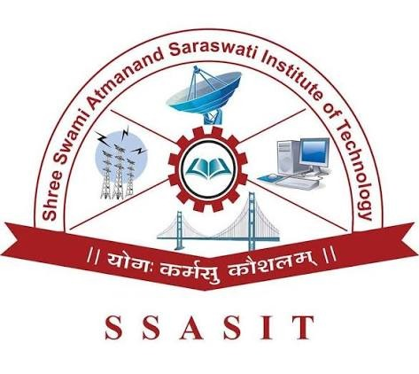
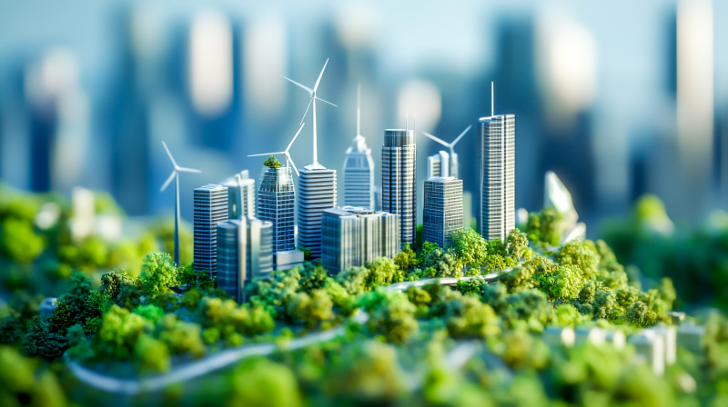
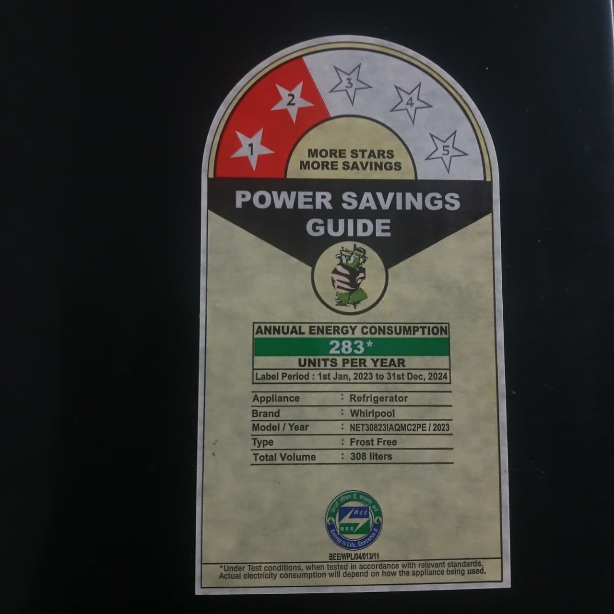
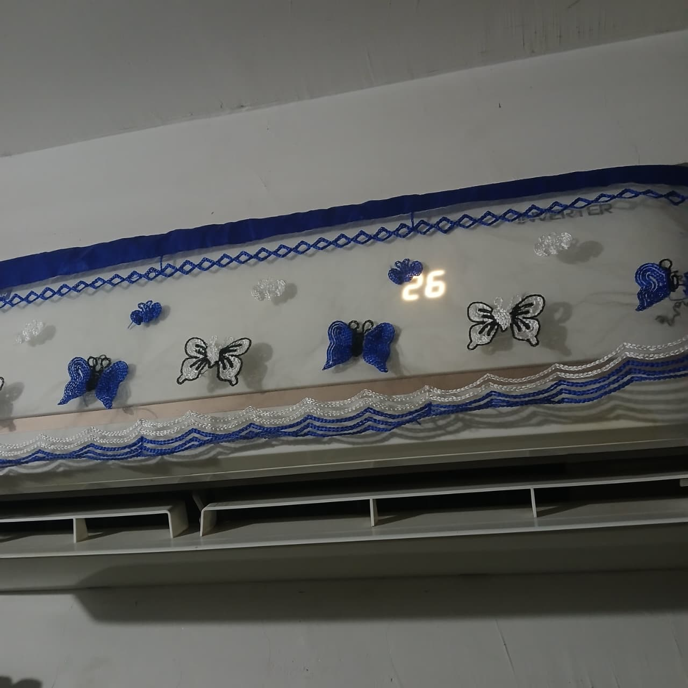
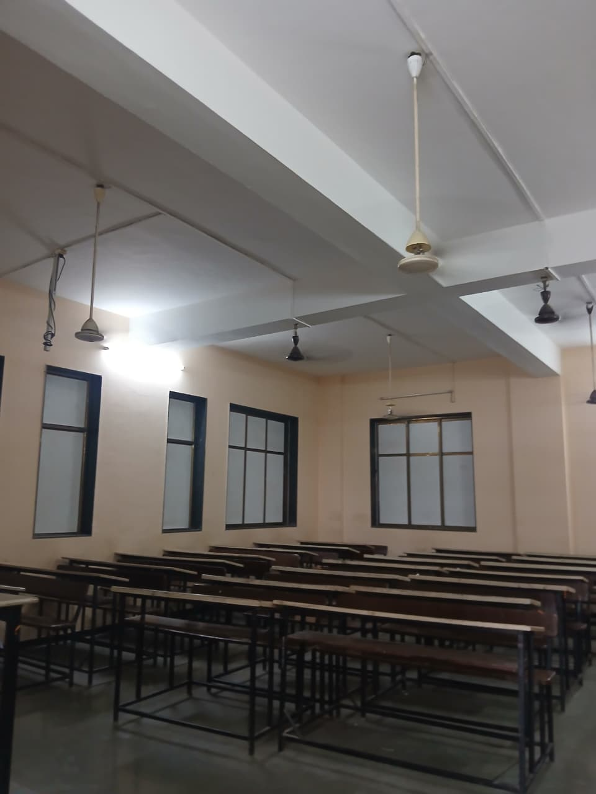
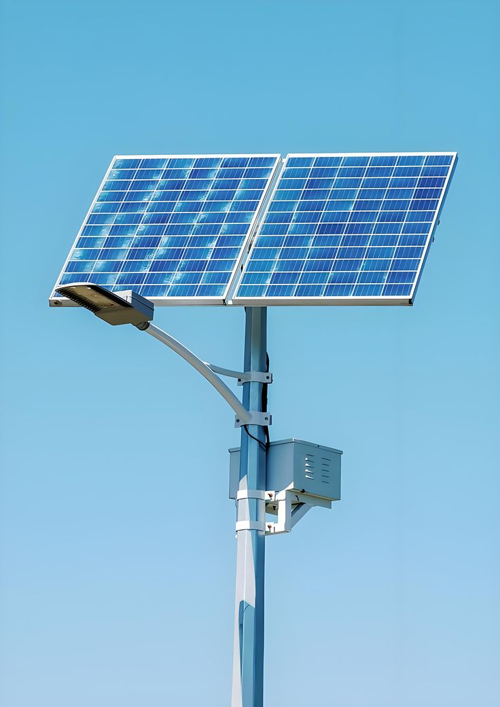
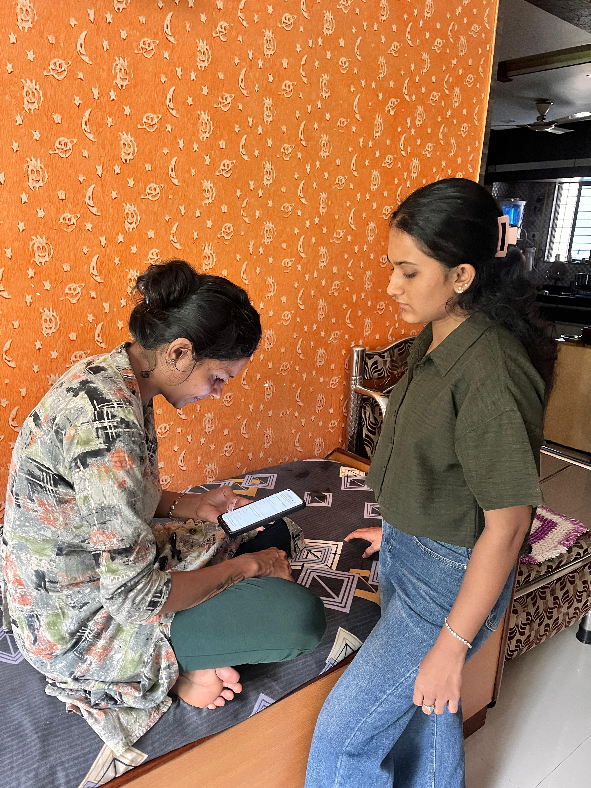
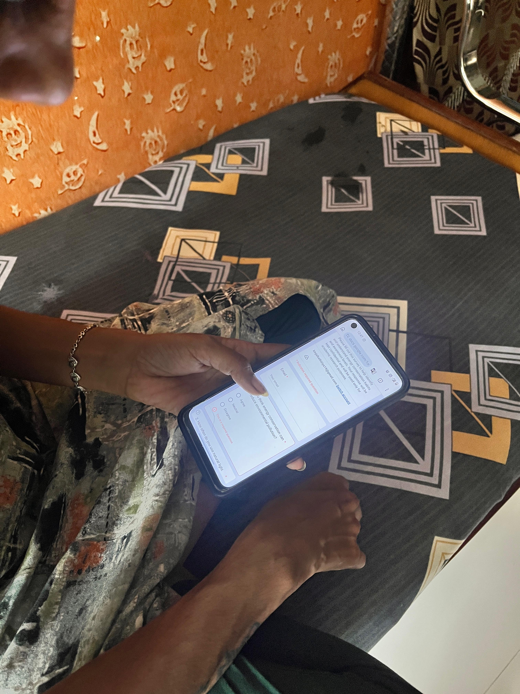

Smart Community Energy Portal
Empowering Sustainable Energy Through Community Insights

Smart Community Energy Portal is an internship project focused on analyzing community energy consumption, promoting sustainable practices, and encouraging energy conservation through data-driven insights.
Survey Analysis
Collect community energy data through digital surveys for meaningful insights.
Smart Energy
Analyze electricity consumption patterns to improve energy efficiency.
Sustainability
Promote sustainable energy practices for a greener future.
About Project
The Smart Community Energy Portal is an academic internship project developed by students of the Computer Engineering Department, Shree Swami Atmanand Saraswati Institute of Technology (SSASIT). The project aims to analyze community energy consumption, encourage sustainable energy practices, and promote energy conservation through survey-based insights, interactive visualizations, and digital technologies.
Project Methodology
Why This Project Matters
Energy conservation is essential for sustainable development. This project helps communities understand electricity consumption, promotes responsible energy usage, encourages renewable energy adoption, and supports smarter decision-making through data-driven insights.
Ready to Explore the World of Energy?
Discover renewable and non-renewable energy sources through an interactive learning experience.
Ready to See the Solution?
You've explored the world of energy. Now discover how technology can inspire awareness, encourage sustainable practices, and build a smarter, greener future.

Energy Explorer
Discover renewable and non-renewable energy sources through an interactive learning experience.

Solar Energy
Clean energy generated from sunlight.

Wind Energy
Electricity produced using wind turbines.

Hydropower
Energy produced from flowing water.

Biomass
Energy produced from organic materials.

Geothermal
Heat energy obtained from the Earth.

Coal
Traditional fossil fuel used for power generation.

Natural Gas
Cleaner fossil fuel used in industries.

Oil
Used for transport and manufacturing.
Nuclear
Produces large amounts of electricity.
Geothermal Energy
Harnessing the Earth's internal heat to generate clean, renewable, and reliable electricity while supporting sustainable energy development.
Overview
Geothermal energy is produced by utilizing heat stored beneath the Earth's surface. This natural heat is used to generate electricity and provide direct heating for buildings and industries, making it a reliable renewable energy source.
Source
The Earth's core continuously produces heat through natural geological processes. Wells are drilled into geothermal reservoirs to access steam and hot water, which are then used to generate electricity.
Advantages
Applications
Interesting Fact
Unlike solar and wind energy, geothermal power can generate electricity continuously throughout the day, making it one of the most reliable renewable energy sources available.
Coal Energy
Coal has been one of the world's primary energy sources for electricity generation and industrial development, providing reliable power while presenting environmental challenges.
Overview
Coal is a fossil fuel formed from the remains of ancient plants over millions of years. It is widely used in thermal power plants to produce electricity and has played a significant role in industrial growth worldwide.
Source
Coal is extracted from underground and surface mines. It is a finite natural resource formed under high pressure and temperature over geological time.
Advantages
Applications
Interesting Fact
Coal has powered industries for more than two centuries and still contributes significantly to global electricity generation, although many countries are increasing the use of cleaner renewable energy sources.
Natural Gas
Natural gas is a cleaner-burning fossil fuel widely used for electricity generation, heating, cooking, transportation, and industrial applications worldwide.
Overview
Natural gas is a fossil fuel mainly composed of methane. It is extracted from underground reservoirs and is considered one of the cleanest fossil fuels because it produces fewer emissions than coal and oil during combustion.
Source
Natural gas is formed from ancient organic matter buried beneath the Earth's surface over millions of years. It is extracted through drilling and transported by pipelines or as liquefied natural gas (LNG).
Advantages
Applications
Interesting Fact
Natural gas produces significantly fewer greenhouse gas emissions than coal when used for electricity generation, making it an important transition fuel while renewable energy capacity continues to grow.
Oil (Petroleum)
Petroleum is one of the world's most important fossil fuels, widely used for transportation, electricity generation, industrial production, and manufacturing.
Overview
Oil, also known as petroleum, is a naturally occurring fossil fuel formed from ancient marine organisms over millions of years. After refining, it is converted into fuels such as petrol, diesel, kerosene, and many industrial products.
Source
Crude oil is extracted from underground reservoirs using drilling techniques. It is transported to refineries where it is processed into various useful petroleum products.
Advantages
Applications
Interesting Fact
Besides producing fuels, petroleum is also used to manufacture plastics, medicines, cosmetics, synthetic fibers, detergents, and thousands of everyday products.
Nuclear Energy
Generating large amounts of electricity through controlled nuclear fission while providing a reliable, low-carbon source of power for modern society.
Overview
Nuclear energy is produced by splitting uranium atoms in a controlled process called nuclear fission. The heat generated is used to produce steam, which drives turbines to generate electricity. It is one of the highest-capacity power sources available today.
Source
The primary fuel for nuclear power plants is uranium. During nuclear fission, uranium atoms release enormous amounts of heat, which is converted into electrical energy through steam turbines.
Advantages
Applications
Interesting Fact
A small amount of uranium fuel can produce millions of times more energy than the same amount of coal, making nuclear energy one of the most energy-dense power sources in the world.
Solar Energy
Harnessing the limitless power of sunlight to generate clean, renewable, and sustainable electricity for homes, industries, and future smart communities.
Overview
Solar energy is produced by converting sunlight into electricity using photovoltaic (PV) panels or concentrated solar power systems. As one of the fastest-growing renewable energy sources, it provides clean, reliable, and sustainable power while reducing dependence on fossil fuels.
Source
The Sun is Earth's primary natural energy source. Every day it provides an enormous amount of energy that can be captured and transformed into electricity without creating harmful pollution.
Advantages
Applications
Interesting Fact
Only one hour of sunlight reaching Earth contains enough energy to power the entire world for approximately one year if it could be efficiently captured and stored.
Wind Energy
Harnessing the natural power of moving air to generate clean, renewable, and sustainable electricity for homes, industries, and smart communities around the world.
Overview
Wind energy is produced by converting the kinetic energy of moving air into electricity using wind turbines. It is one of the fastest-growing renewable energy sources and provides clean electricity without producing harmful greenhouse gases.
Source
Wind is naturally created by uneven heating of the Earth's surface by the Sun. Modern wind turbines capture this moving air and convert its kinetic energy into electrical power.
Advantages
Applications
Interesting Fact
A single modern wind turbine can generate enough electricity to power hundreds of homes every year, making wind energy one of the most efficient and environmentally friendly renewable energy sources available today.
Biomass Energy
Converting organic materials into clean and renewable energy to support sustainable electricity generation, heating, and eco-friendly fuel production.
Overview
Biomass energy is produced from organic materials such as agricultural waste, wood, food waste, and animal residues. These materials are converted into heat, electricity, or biofuels, making biomass an environmentally friendly renewable energy source.
Source
Biomass comes from plants, trees, crop residues, animal waste, and biodegradable organic matter. These natural materials are processed to generate useful energy.
Advantages
Applications
Interesting Fact
Biomass helps convert waste materials into useful energy, reducing landfill waste while providing a sustainable alternative to fossil fuels.
Smart Energy Solutions
The Smart Community Energy Portal is designed to identify real-world energy challenges and provide practical digital solutions that promote renewable energy awareness, community participation, and sustainable energy conservation.
Problems We Identified
During our community survey and research, we observed that many people have limited awareness about renewable energy, energy conservation, and sustainable practices. Most individuals are unaware of simple methods to reduce electricity consumption and contribute to environmental sustainability. Additionally, there is no single digital platform that combines energy education, public participation, and awareness in an easy-to-understand manner.
Limited Awareness
Many people lack knowledge about renewable energy sources and energy-saving practices, resulting in inefficient energy usage and missed opportunities for conservation.
Lack of Community Participation
There is no simple digital platform where citizens can easily share their opinions, participate in awareness activities, and contribute ideas for energy conservation.
Environmental Challenges
Excessive energy consumption contributes to pollution, climate change, and the depletion of natural resources, making sustainable energy practices increasingly important.
Scattered Information
Energy-related information is often available across multiple sources, making it difficult for people to access reliable knowledge in one convenient place.
Our Digital Solution
To address these challenges, we developed the Smart Community Energy Portal, an interactive web platform that spreads awareness about renewable energy, encourages community participation through digital surveys, and provides educational resources in a simple and engaging manner.
Energy Explorer
Explore detailed information about renewable and non-renewable energy sources with simple explanations, advantages, disadvantages, and real-world applications.
Community Survey
Collect valuable opinions and feedback from citizens regarding energy awareness to better understand community needs and support informed decision-making.
Energy Awareness
Promote sustainable living through practical energy-saving tips, educational resources, and awareness initiatives that encourage responsible energy consumption.
Energy Conservation Awareness
Watch a short educational video to understand the importance of energy conservation and learn practical ways to save electricity in everyday life.
▶ Watch Awareness VideoDaily Energy Saving Tips
Simple habits can make a significant difference in reducing electricity consumption and protecting the environment. Follow these practical energy-saving tips in your daily life:
- Turn Off Unused Lights
Switch off lights, fans, and other electrical appliances whenever they are not in use. - Use LED Bulbs
Replace traditional incandescent bulbs with LED lights, which consume much less electricity and last longer. - Unplug Chargers
Disconnect mobile chargers, laptops, and other devices after charging to avoid unnecessary power consumption. - Use Natural Daylight
Open windows and curtains during the day to reduce the need for artificial lighting. - Set Air Conditioner Efficiently
Maintain the AC temperature between 24°C and 26°C for comfortable cooling and better energy efficiency. - Choose Energy-Efficient Appliances
Purchase appliances with a high energy efficiency rating (5-Star or Energy Star certified). - Reduce Water Heating
Use hot water only when necessary, as water heaters consume a significant amount of electricity. - Promote Renewable Energy
Whenever possible, use solar energy and encourage others to adopt renewable energy solutions.
Expected Outcomes
✔ Increase public awareness about renewable energy and sustainable practices.
✔ Encourage responsible electricity consumption and energy conservation.
✔ Promote active community participation through digital surveys.
✔ Support environmentally friendly and sustainable lifestyles.
✔ Inspire communities to adopt long-term energy-saving habits.
Future Vision
In the future, this portal can be expanded with AI-powered energy recommendations, real-time energy consumption monitoring, government awareness programs, smart analytics dashboards, and mobile application support to reach a wider community and promote sustainable development.
"Small actions today create a sustainable tomorrow. Together, we can build a smarter, greener future through awareness, innovation, and responsible energy conservation."
Community Energy Survey
Help us understand community energy consumption by participating in our survey. You can also explore the collected survey responses through the response dashboard.
Scan to Participate
Scan the QR code using your mobile device to fill out the Community Energy Survey.
Open Survey FormScan to View Responses
Scan the QR code to explore the live survey responses and community insights.
Open Survey ResponsesProject Documents
Internship Report
Complete internship report containing project objectives, methodology, survey analysis, results, and recommendations.
View ReportProject Presentation
Presentation prepared for the Smart Community Energy Portal project, highlighting key findings and outcomes.
View PresentationProject Gallery






Project Team
Our dedicated team collaborated to design, develop, analyze, and successfully complete the Smart Community Energy Portal as part of the GTU Internship Project. Through teamwork and innovation, we aimed to promote sustainable energy awareness and provide meaningful community insights.
7
Team Members
Computer Engineering
Department
SSASIT
Institution
2026
Academic Year
Team Members
Contact Information
Shree Swami Atmanand Saraswati Institute of Technology
Computer Engineering Department
The Smart Community Energy Portal is an academic internship project developed by Computer Engineering students of SSASIT. This portal promotes awareness of sustainable energy practices and presents survey-based insights. For official college inquiries, please use the contact details provided below.
Official College Contact
Address
Shree Swami Atmanand Saraswati ,
Kapodra–Varachha Road,
Surat, Gujarat – 395006, India
Phone
+91 261-2573552 / 53
Email
admin@ssasit.ac.in
Website
www.ssasit.ac.in
College Timings
Monday – Saturday
09:00 AM – 05:00 PM
Project Feedback
(This feedback form is provided for demonstration purposes only as part of the Smart Community Energy Portal project. Information submitted through this form is not sent to SSASIT or any official college department.)